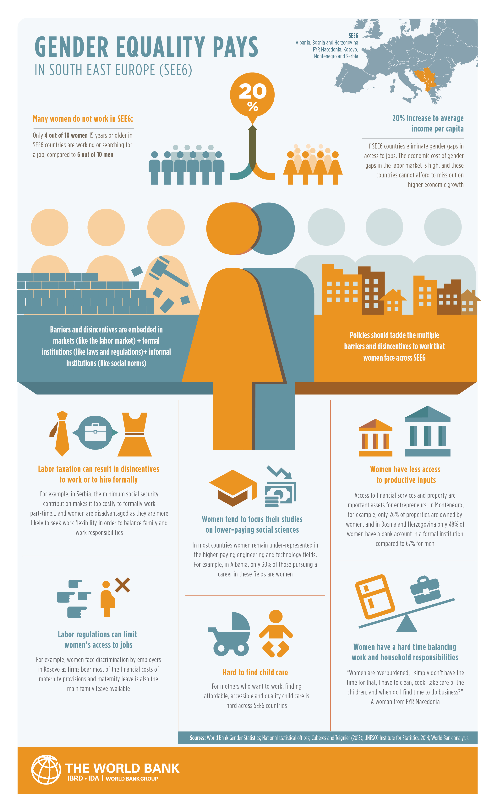

My cause is Inequalities. There are many different inequalities but this time i'll focus on inequality between male and female, or feminism in specific. Misconception: people think that feminists hate men and want to be superior.
How to make a convincing argument
First we need a headline that contains the core fact:
Appropriate feminism is geared towards true gender equality
Then we need an opening paragraph, which reinforces the headline:
Most people in today's society prioritize the male point of view, and women are not being treated fairly in many aspects such as in work place or their role in household. Feminism fights gender stereotypes and creating opportunities for women to be see as equal to men.
Then comes an infographic to reinforces some more:

Gender equality in South East Europe
Source: Gender equality pays in South East Europe
Explaining the infographic:
As we can see, women are facing a lot of discrimination in many different ways. Feminism is the act to change that discrimination.
Before going to the misconception, we need a warning:
However, there are some people who don't understand feminism to its core but just here about it and establish their thoughts wrongly.
Now we tell the myth:
For example, the most common misconception is that feminists hate men.
So now we created a gap "feminists hate men". We can fill it with explanations:
The reasons for this misunderstanding is that some feminists do hate men, but they're minor. People assume that all feminists hate men because they see some feminists hate men. More specifically, extreme feminists who promote the idea that femininity is superior. Moreoever, there are men who wants everyone to misunderstand feminism to maintain their power in society.